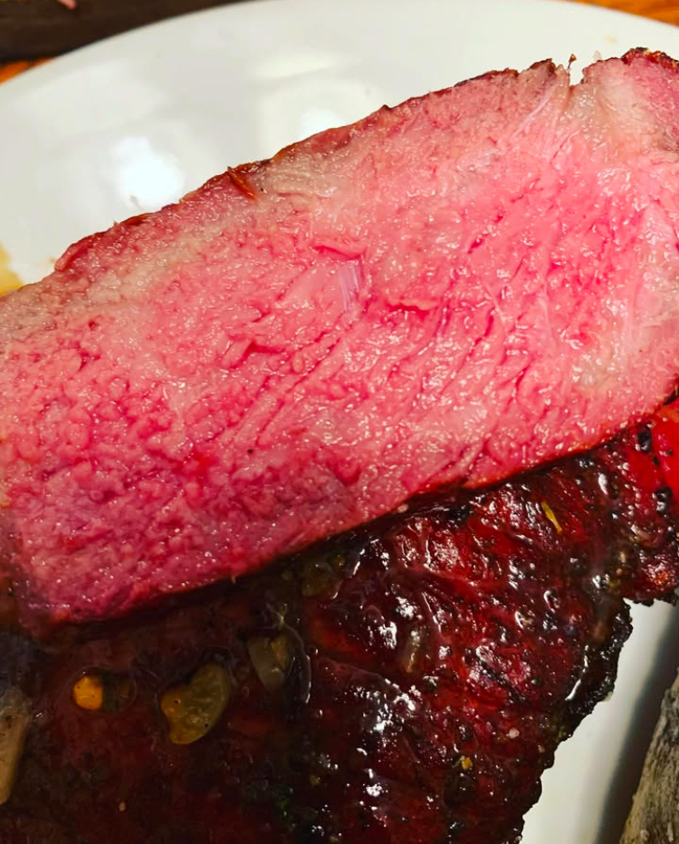
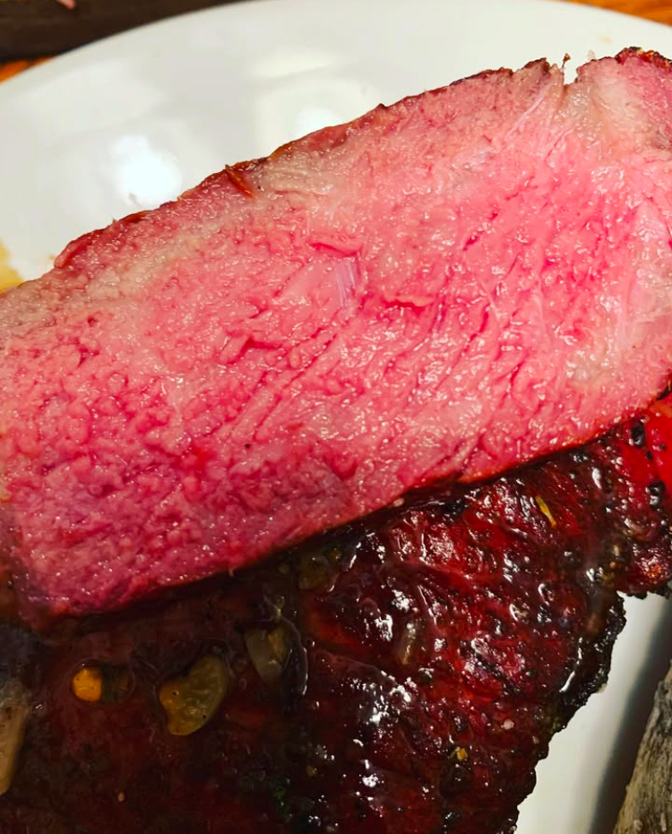
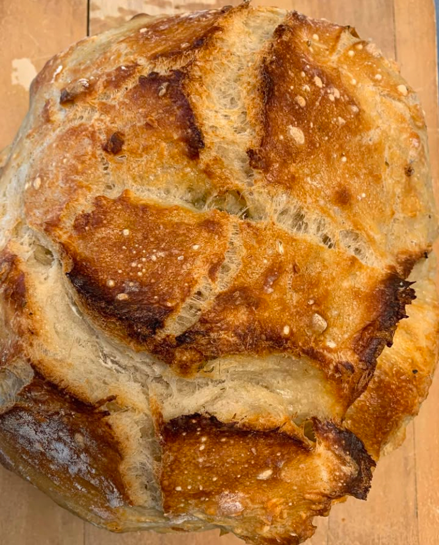

Steak Perfection
I smoked this 1 lb New York Strip steak to a perfect medium rare, then seared it over an open flame with garlic herb butter.
I smoked this 1 lb New York Strip steak to a perfect medium rare, then seared it over an open flame with garlic herb butter.
This is one of the many loaves that my sourdough starter, named David A. Breadnar, has made for me in the past year.
Watch this video to dive deeper into the art of sourdough baking:
Explore an interactive dashboard highlighting the impact of food deserts: